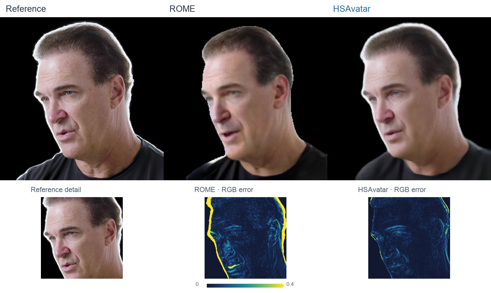

ONE IMAGE. DEFORMABLE GEOMETRY. ALIGNED APPEARANCE.
HSAVATAROne-shot Animatable Gaussian Avatars
via an Adaptive Hybrid Shape Model
and UVH-guided Appearance Modeling
1 Peking University 2 Pengcheng Laboratory
* Equal contribution
Recover geometry first. Align image evidence to it.
Build a canonical avatar once and reuse it across target frames.
Abstract
Reconstructing an animatable Gaussian avatar from a single portrait is challenging because the observed image provides incomplete evidence for both 3D geometry and appearance. In particular, facial templates cannot adequately represent hair and shoulder regions, while image features projected to 3D may suffer from ambiguous correspondence and occlusion. We propose HSAvatar, a two stage framework that first establishes a personalized and deformable geometric scaffold, and then predicts Gaussian appearance on this structure. In Stage I, a Hybrid Shape Model (HSM) combines a FLAME based head with an adaptive shoulder and neck carrier. Layered normal offsets extend the geometric support, while region specific deformation correspondence enables consistent animation. In Stage II, the learned shape is organized with UVH coordinates and serves as the reference for appearance modeling. Global identity features, local high frequency features, multi scale texture features, and a projection derived physical clue are integrated through multi-clue fusion. A UVH based Gaussian attribute decoder then predicts the canonical Gaussian attributes. Experiments demonstrate HSAvatar achieves competitive reconstruction quality, accurate motion transfer, and real time animation on public benchmark.
METHOD
Hybrid geometry.
UVH-guided appearance.
A personalized head–shoulder scaffold
with multi-clue appearance fusion.

Overview of HSAvatar. HSM establishes personalized head–shoulder geometry with explicit deformation correspondence. UVH-guided multi-clue fusion predicts canonical Gaussian appearance; target expressions and poses animate the avatar through region-specific LBS and rendering.
01 / CONTROLLABLE ANIMATION
Appearance and shape.
Driven together.
A shared FLAME motion animates the avatar
and its learned head–shoulder shape.
776.7FPS · HSM deformation
98.9FPS · Avatar rendering
RTX 4090 · 512 × 512Top: rendered avatars. Bottom: the corresponding HSM shape points. Colors distinguish head, shoulder and neck, and teeth carriers.
Rendering measurements
Measured on one RTX 4090 at 512 × 512, batch size 1, FP32, with the source avatar cached. Three test portraits and three runs of 240 frames give 2,160 timed frames per path, following 30 warm-up frames per portrait. HSM deformation averages 1.29 ms; complete avatar rendering averages 10.11 ms. The former measures target geometry deformation; the latter includes deformation, Gaussian rendering, NAFNet refinement and alpha composition. Measurements use the bounded FLAME control sequences. Source initialization, I/O and video encoding are excluded.
02 / MOTION TRANSFER
Bring portraits to life.
Audio → FLAME motion → HSAvatar
From speech
The same speech motion animates different portraits.
Enable sound to hear the driving audio.
From images
A source portrait animated by a sequence of driving images.
03 / SELECTED COMPARISONS
A closer look.
Selected moments with matched
source portraits and driving frames.

Comparison setup
The examples use the same source and target frames for both methods. ROME uses its official inference pipeline; HSAvatar uses the final refined output. Facial-detail error maps use mean absolute RGB error over the reference foreground, with a shared 0–0.4 scale.